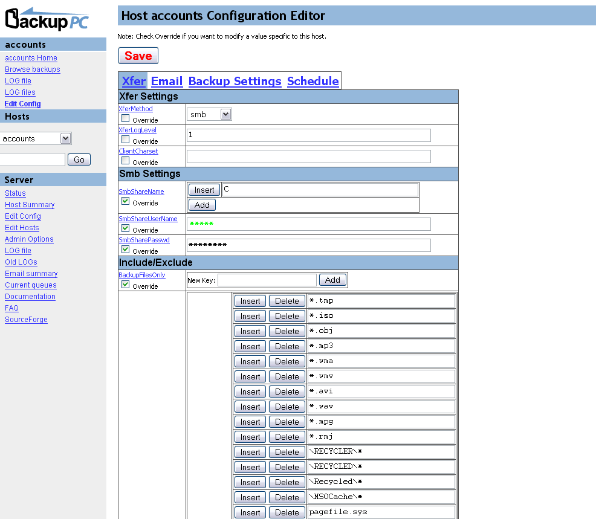

This screen shows the configuration editor for a particular host.
The host's configuration parameters are arranged into several categories
accessed via the tabs at the top of the table. The administrator can
choose to disable the per-host configuration editing, or restrict which
parameters can be edited by users.
The global server configuration and host editor is available via the
navigation bar to the administrator.


BackupPC is hosted on Github, and is distributed under a GPL license. BackupPC is © Copyright 2001-2020 Craig Barratt.